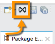
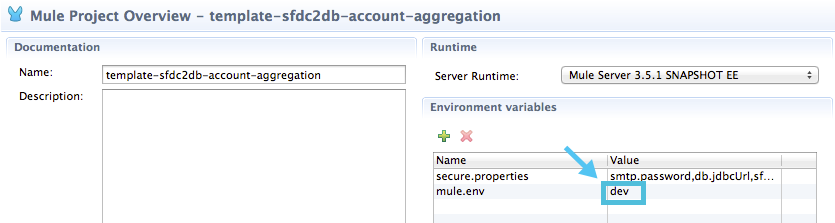
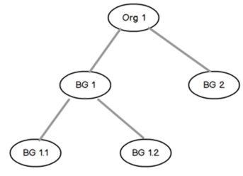

Anypoint Exchange 1
Exchange 1 is home to the complete listing of connectors, templates, examples, APIs, and other learning information. You can add assets to a private tenant of Anypoint Exchange for collaboration and sharing of internal best practices.
Accessing Anypoint Exchange
-
Access Exchange 1 at
https://anypoint.mulesoft.com/exchange1/. -
From Anypoint Studio Taskbar - Within Studio, to enable access to Exchange 1 in Anypoint Studio, click Preferences > Anypoint Studio > Exchange and set the Exchange Settings URL to the
https://anypoint.mulesoft.com/exchange1/value. -
Click the Exchange toolbar icon in the top task bar.

-
From the Mule Palette in Anypoint Studio - Within Studio, when you search, Exchange provides a link for additional information.

-
From the Studio Project menu - Click File > New > Project From Template to create a Mule project from a template.
Anypoint Exchange Features
Anypoint Exchange provides a unified user interface and API for discovery and consumption of connectivity and API assets such as:
-
Examples - Implementation projects that explain development elements within Anypoint Studio and how these can be leveraged to achieve specific API and integration objectives. Examples are applications that are ready to run and demonstrate a use case or solution.
-
Templates - Packaged integration patterns that address common use cases and are built on best practices. Use case applications to which you add your information to complete a user case or solution.
-
Connectors - Packaged connectivity to an endpoint developed and deployed on MuleSoft’s Anypoint Platform with third-party APIs and standard integration protocols. Anypoint Studio is preloaded with a large set of connectors, but the full listing can be found on the Exchange. View details on applications that provide connections between resources. To install connectors, open Exchange from within Anypoint Studio.
-
REST APIs - A RAML API description (see`raml.org`). If you have an OAS REST API, use Exchange 2 to install it.
-
SOAP APIs - API descriptions in a WSDL that helps make the adoption of the Anypoint Platform easier and faster.
-
Others - Blogs, Articles, Videos and more - Links that assist with knowledge sharing, such as information on DataWeave, MEL, batch processing, MUnit, policies, and links to knowledge sharing information sources.
Exchange provides the ability to discover public assets provided by MuleSoft in addition to the catalog and discovery of private assets. All public content is provided and certified by MuleSoft, and partner connectors have been reviewed and approved by MuleSoft. All private content is internal to an organization and not exposed externally. Customers are responsible for any private content published within their Exchange.
You can use Exchange to:
-
Increase productivity and accelerate onramp for new users by building categories filled with crucial information.
-
Ensure there is alignment and adoption on how to accomplish tasks in the manner compliant with your organization’s standards, policies, or guidelines, such as error handling, auditing, authentication, etc.
-
Share and build on best practices. Users can adopt best practices by searching or browsing Exchange, and suggest enhancements as they improve their understanding of existing assets.
Anypoint Exchange Private Cloud Edition enables companies to manage Exchange from their site. For more information, see the Anypoint Exchange Private Cloud Edition Release Notes.
Anypoint Exchange Private Cloud Edition does not allow users to access the MuleSoft tenant available on the cloud, and thus is shipped with no default content.
Exchange Private Cloud Edition is currently not accessible from Anypoint Studio.
Navigating Anypoint Exchange
You can search Exchange using tags and keywords for a name, summary, description, and tags on the items. Each element is tagged with labels that refer to a version, the Mule Runtime versions it supports, etc. These are organized by pattern so you can scan through only those that perform what you’re interested in.
For an item:
-
Click View Details to read a brief overview of the project and access more options.
-
Click Download to directly download the project or connector to your Studio workspace and open it in Studio.
Every piece of content, regardless of its type, has a rating associated to it. This rating is displayed next to the element once it has received two or more ratings.
You can only submit a rating if you have entered Exchange through Anypoint Studio. If you’re rating a Connector, you also need to have it installed in Anypoint Studio to rate it.
Content Types
Both the public and private content in Exchange can consist of the following kinds of elements:
Connectors - Facilitate easy integration of your Mule applications with third-party APIs and standard integration protocols. Use them within your application’s flows to send and receive data via a protocol or specific API. Anypoint Studio comes bundled with a large set of connectors, but in the Exchange are many more.
REST and SOAP files - APIs are RAML files that describe an API’s structure, they can be referenced by an HTTP Request Connector to expose metadata to Studio.
Examples - Mule projects that explain what the elements are in Studio and how they work together to achieve certain objectives.
Templates are projects that cover typical enterprise integration use cases. Find one that performs what you need, provide it user credentials, and it should be good to deploy! You can also customize or extend templates as needed.
All templates in the Exchange are based on these data integration patterns:
-
Migration
-
Broadcast
-
Bi-directional sync
-
Correlation
-
Aggregation
The examples and templates categories depend on the purpose for which each project is built: templates are almost ready to use just-add-water solutions, while examples are intended to increase your understanding of Studio elements and to build your own solution. Of course, if it suits your needs you could also end up using an example as a starting point for an actual deployable project or a template as a tool for understanding concepts.
Administering Anypoint Exchange
For a user to create, publish, update, or delete elements from an organization’s Exchange, a user must first be provisioned with the appropriate permissions. No user has permissions to submit or edit items by default, not even Organization Administrators.
The Anypoint Platform provides these roles that define who can administer or contribute content on the Exchange:
-
Exchange Contributors - Allows users to add and edit their own items. However, any content created is not published and is only visible to the creator and to Exchange Administrators, until such an administrator chooses to set the status of this contribution as published. Contributors can see all of the published content from others, but they cannot edit or delete any of it.
-
Exchange Administrator - Allows users to add, edit, publish and delete all items. Exchange Administrators act as governors of an organization’s internal content with the ability to publish their own and others’ content that has not been published to Exchange. Once published, the content is visible to everyone in the organization. They can see, edit, or delete any content from others, whether it is published or not.
-
Organization Administrators - Administer Exchange-specific roles through the standard Anypoint Platform user interface.
Contributing to Anypoint Exchange
Users must sign up with Anypoint Platform, log in, and be assigned either the Exchange Contributors or Exchange Administrators role to contribute items to an organization’s Exchange.
All preloaded content from MuleSoft in Anypoint Exchange is read-only.
An Add Item button on the top left of Exchange is displayed for users with the entitlements to create an entry in the organization’s Exchange. When a user submits an item, they are required to pick the item type from a drop down list. The item type denotes what fields are displayed on the item submission form. Irrespective of the content type selected, a number of standard metadata items are available to describe the item:
-
Name: Name of the item to be displayed. (Mandatory)
-
Item ID: The URI – string of characters used to identify a name of a resource so that the item can be shared as its own entity with its own URL internally. (Mandatory)
-
Icon URL: URL of a web-hosted image. (Optional)
-
Summary: A headline summary of the item. (Optional)
-
Author: The creator(s) of the item and an image of them/their team. This is useful when the organization has many contributors and partners. (Optional)
-
Description: Detailed description of the item. Use Markdown or HTML to edit this section.
-
YouTube Video URL: YouTube video to provide more information about the item. This can be particularly useful for describing examples or how to leverage a template or connector.
-
Versions: MuleSoft requires version information when adding an item to the Exchange. This allows users to identify and locate specific versions of an asset within the Exchange as it develops and matures over time.
-
File URL or Link: Reference to the physical asset that constitutes the specific version of the item.
-
Version: Version of the item.
-
Runtime: The Mule runtime version the asset is supported on.
-
Documentation URL: Reference to detailed documentation on a versioned asset (such as for developer reference documentation).
-
Tags: Metadata tags that help describe the item and make it easier to discover and search in the Exchange.
-
Links: Links to any additional or related resources. When items are submitted, they are added to the Exchange in an unpublished state. An unpublished item is only visible to the creator and Exchange Administrators. Exchange Administrators are responsible for publishing items. Following a review of the item, an administrator can publish the item and make it live at a click of a button. Similarly Exchange Administrators can unpublish items.
Storing Assets
Anypoint Exchange does not store or host an organization’s assets. The Exchange provides a platform-wide interface for discovering and consuming the assets, but assets must be stored in external repositories.
Typically the assets themselves are stored in existing organizational repositories such as:
-
Source code repositories.
-
Artifact repositories.
-
Content Management Systems (CMS).
-
API portals.
-
Other internet based resources, such as web sites.
Consuming Assets
In Anypoint Studio, simply navigate to the item in the Exchange and choose to open or install the asset (or download from website or portal).
Installing a Connector from Anypoint Exchange
You can only install a connector by first starting Anypoint Studio and clicking the Exchange icon at the left on the Studio task bar. Anypoint Exchange opened in a browser only lets you view details for a connector, but not install it. If a connector is already installed on your computer, the Installed button is grayed out in Exchange (accessed via Studio).
To install connectors from Exchange into Studio:
-
To enable access to Exchange 1 in Anypoint Studio, click Preferences > Anypoint Studio > Exchange and set the Exchange Settings URL to the
https://anypoint.mulesoft.com/exchange1/value. -
Find the connector you need. Click View details to make sure the connector is compatible with the Mule runtime you want to build projects for. If the connector is compatible, click Install.
-
Accept the terms and conditions and follow through the wizard, and allow Studio to restart.
-
Search for the connector and drag it to the Studio Canvas.
Implementing an Example in Exchange
-
To enable access to Exchange 1 in Anypoint Studio, click Preferences > Anypoint Studio > Exchange and set the Exchange Settings URL to the
https://anypoint.mulesoft.com/exchange1/value. -
Find the example that best suits your needs and click View details.
-
Click Open in Studio to import it into Studio as a new project.
-
The project is then available in Package Explorer. Take a look at the files it contains. Check the
src/main/appto find the XML file for this example. -
If there are any connectors in the project that require user credentials, open the connector’s properties editor, and fill in these fields.
-
The example is now complete. You can deploy it to see view its outcome, run it in debug mode to examine what occurs with the Mule Message on each step, or modify it as needed.
Implementing a Template From Exchange
Below are the basic steps for implementing any of the templates in Exchange:
-
To enable access to Exchange 1 in Anypoint Studio, click Preferences > Anypoint Studio > Exchange and set the Exchange Settings URL to the
https://anypoint.mulesoft.com/exchange1/value. -
Find the template that best suits your needs and click Open in Studio.
-
You can now see this project available in your package explorer, take a look at the files it contains. When you first open the project it may be marked as having errors, these should simply refer to the fact that the connectors being used in it need to be configured with your user credentials to work.
-
Open the
mule-project.xmlfile, located directly in the root level of the project folder, if you wish to deploy your app to any environment other thandev, change the value of themule.envparameter.
-
All templates in Exchange come built in, so to make them work, all you need is to include your credentials in the configuration files. All the connectors and global elements in the project’s flows reference the fields in these configuration files, so unless you plan on expanding or customizing how the template works, you never need to modify or even look at anything other than these files. These files are in the
src/main/resourcesfolder. Find the file that corresponds to the environment that you selected for deploying in the previous step, then open it. -
Provide a value for each of the fields that the configuration file expects, this may include user credentials, port numbers, callback URLs, etc.
-
To test your app, save the project and deploy it to Anypoint Studio’s embedded run time by clicking the dropdown menu next to the green
Runbutton and selecting the project out of the list.Your app is ready to deploy.
REST API Referencing
When using the HTTP Request Connector, you can reference a RAML file, which makes configuring the connector and the rest of your flow easier. By referencing the RAML file, the connector offers you smart autocomplete options based on how the RAML file describes the available resources, methods and parameters. The metadata that the connector exposes can help you map it to other elements and reference its outputs elsewhere in the flow, specially with help from the DataWeave Transform Message Component.
-
In an HTTP Request Connector’s properties editor, click the green plus sign next to Connector Configuration to create a Global Configuration Element for it.
-
In the General tab, provide a RAML Location. You can reference a file stored in your local system, or you can use Exchange to browse a list of public APIs that have published their RAML definitions by clicking Search RAML in Exchange.
-
Navigate Exchange and look for the API you wish to connect to. You can either click the View Details button to read more about that API and RAML definition, or you can click Add to make your HTTP Connector reference it.
WSDL SOAP API Referencing
You can use the Web Service Consumer to reference a WSDL file for a SOAP API.
A WSDL file connector offers you autocomplete options based on how the WSDL file describes the available resources, methods and parameters. The metadata that the connector exposes can help you map it to other elements and reference its outputs elsewhere in the flow, specially with help from the DataWeave Transform Message Component.
To reference a SOAP WSDL:
-
In the Web Service Consumer’s properties editor, click the green plus sign next to Connector Configuration to create a Global Configuration Element for it.
-
In the General tab of the Web Service Consumer’s Global Element Properties menu, provide a WSDL Location. You can reference a file stored in your local system, or you can use Anypoint Exchange to browse a list of public APIs that have published their WSDL definitions by clicking on Search WSDL in Exchange.
-
Navigate Exchange and look for the API you wish to connect to. You can either click the View Details button to read more about that API and WSDL definition, or you can click Add to make your Web Service Consumer reference it.
Submitting Your Private Content to Exchange
If you have an Anypoint Platform account, your organization can share its supported items privately in Exchange. A private Exchange can be accessed by clicking Login. Exchange provides a searchable repository where you can catalog and describe the elements you want to share, together with version compatibility information and links to downloadable files and reference material.
Exchange does not host private files, it only links to them. This means that if you want to make a Mule Project or a Connector easily downloadable through your Exchange, you must host these elsewhere through an HTTP service. Alternatively you can use Exchange 2 which lets you host files in Exchange.
Enabling Exchange Permissions
| This information applies only to the legacy Exchange 1 and does not apply to the current Exchange 2 version. |
All users in an organization can view items published in Exchange. However, to create, publish, update, or delete elements from your organization’s Exchange, a user must first be given the appropriate permissions within the organization.
By default, no one has permission to submit Exchange content. If you are an organization administrator, you can add a user to one of the three roles.
After you log into Anypoint Platform, click Access Management from the left side navigation bar or the starting Anypoint Platform menu, then pick the Roles tab. This displays a table with a set of roles for various different tools, only three of which are relevant to Exchange:
-
Exchange Viewers - Views Exchange artifacts.
-
Exchange Contributors - Contributes Exchange artifacts.
-
Exchange Administrators - Approves Exchange artifacts that the contributor creates so that the artifact can be published in Exchange.
To add users to a role, click a role, click the username field to select a name, and click the blue plus button to save the entry. The user is assigned Exchange permissions and can submit items.
Tip: In Anypoint Platform, you can open and close the left navigation bar view by pressing the Escape key on your keyboard.
Content State Transition by Role
At any given point in time, content can be in any one of the following 3 states:
-
Work in Progress: When the contributor starts working on it and saves it without submitting it for Publishing.
-
Waiting for Approval: When the contributor submits it for publishing but the approver hasn’t published it yet.
-
Published: When an Administrator role user approves the content. The content moves back to Waiting For Approval if the administrator denies it.
An Exchange Contributor submits content to Exchange, however this content remains Work in Progress and is only visible to the contributor. The contributor can also Request for publish. Only then can the administrator see this content and publish or deny the request.
Exchange Administrators can publish their own content and other user’s content to Exchange. Administrators are able to see, edit, or delete any of the content from others that are published or waiting for approval.
An Exchange Viewer can only view content.
Submitting to a Private Exchange
To submit an entry to Exchange, click the Add Item button on the top left, then pick the type of item you want to submit out of the drop down list, each kind of item offers a submission form with different fields.
Whatever type of Exchange entry you’re creating, you can include a description and even embed a YouTube video to provide more information about your entry. You can also add different tags to your entry to make it easier to find in Exchange.
You can also include an Author name and a corresponding image to optionally display on your content. This can be useful when your organization has many contributors and partners. This section is hidden if not filled out.
Keep in mind that after submitting an item, it is added to the Exchange with an work in progress status, which makes it only visible to yourself. If you have Exchange Administrator role, you can easily publish it by opening the Exchange entry through the View Details button and clicking the Publish button. If you have Exchange Contributor role, you can Request for publish and then a user with Exchange Administrator role can see it and approve.
Audit Logs
Audit Logs is a logging feature in Anypoint Exchange v1.7.0 and later that lets private Exchange administrators view a log of all actions in their Exchange. Logged events include creating, adding, and deleting items, publishing, edits, and more—essentially any action that occurs when users use Exchange.
Information in the logs are kept indefinitely.
To enable Audit Logs access, each user must have the Exchange Administrator role, Organization Administrator role, and there must be at least one Exchange item created for the private Exchange.
To enable audit logging:
-
Log into Anypoint Platform.
-
Click Access Management and Roles.
-
In the Roles menu, enable access to the Exchange Administrator and Organization Administrators for each user who needs to see the logs.
-
Perform activity on the Exchange, such as adding an item, publishing an item, etc. This puts activities in the log so you can view them.
-
Click Access Management > Audit Logs.
-
Click Products and click Exchange.
To view the log:
-
Log into Anypoint Platform and click Access Management > Audit Logs
-
Under the Payload column of the Exchange listing, click the download button. Exchange saves a copy of the logs in the payload.txt file.
-
Open the payload.txt file using a text editor or a browser.
Submitting Templates and Examples to a Private Exchange
Templates and examples are both submitted to the Exchange in the same way. You can add multiple template versions to work with different Mule runtime versions, just click the Add Versions button and then Done after filling in the version information. For each version you add, you have three options for linking to the Mule Project itself:
-
Download: Link to an HTTP address where you host your Mule deployable zip file. Other people on your organization see a Download button on the Exchange entry, which allows them to import the project to Studio with one click.
-
Link: Link to an external address, where they might be able to download the file and import it into studio manually.
-
No link: Don’t provide a link, your Exchange entry only contains a description.
For your project to be automatically importable into Studio via Exchange, it must be packaged into a .zip file that must be structured in a particular way.
If you use the January 2015 - Update Site 1 version of Anypoint Studio or newer, exporting your project already produces a zip file that has the necessary structure. To expose your Mule Project on Exchange:
-
Select File > Export.
-
Click Mule > Anypoint Studio Project to Mule Deployable Archive (includes Studio metadata)
-
Follow the remaining steps in the wizard to provide a name and location for your exported file Host resulting .zip file in an HTTP server.
-
Submit an example or template to your Exchange, add a version and reference this HTTP address in it.
Submitting Connectors to a Private Exchange
If you produce your own custom connectors with DevKit, you can share them among your organization as well through your Exchange.
You can add multiple connector versions for each Mule runtime version, just click the Add Versions button and then Done after filling in the version information.
For each version you add, you have three options for linking to the connector itself:
-
Install: Reference a Feature ID, which points to an update site where the connector can be downloaded from. Currently, other people can’t download a privately published connector directly, as they can with public connectors. This feature will be provided in the future. For the time being, you must link to an address where they can download the connector.
-
Link: Link to an external address, where perhaps they may be able to download the file and import it into Studio manually.
-
No link: Don’t provide a link; your Exchange entry only contains a description.
You can also link to specific documentation for each version of your connector, referenced separately on each version.
Installing a Connector in Anypoint Studio
-
To enable access to Exchange 1 in Anypoint Studio, click Preferences > Anypoint Studio > Exchange and set the Exchange Settings URL to the
https://anypoint.mulesoft.com/exchange1/value. -
Under the Help menu in Anypoint Studio, click Install New Software.
-
Click Add next to the Work with field, then enter the following values:
-
Name: A name to display your connector in the palette.
-
Location: the filepath of your connector’s update-site.zip file (inside the
targetfolder) prepended withfile:/.
-
-
In the checkboxes below the filter field (see image below), select your connector. Click to expand the folders to select individual items, and click Next.
-
Review the details of the item you selected, then click Next.
-
Click to accept terms and conditions of the product, then click Finish.
-
Click Restart Now to complete the installation.
-
After Studio restarts, search for your new Hello connector in the palette.
REST APIs
If you have a RAML definition file that describes your API, or if you have an API Portal to document it interactively, you can expose these to others in your organization using Exchange. If someone in your organization wants to connect to your API via the HTTP Request Connector in Anypoint Studio, referencing the API’s RAML file exposes the API’s metadata, making integration a lot easier. If your API is registered in API Manager, you can also link to its portal from Exchange, which provides very versatile interactive tools for easing your internal user’s engagement with it.
To add multiple API versions to your Exchange entry, just click the Add Versions button, and then Done after filling in the version information. For each version you add, also include:
-
A link to the API’s RAML definition file.
-
A link to the API’s Portal on API Manager.
SOAP APIs
If you have a WSDL definition file that describes your API, you can expose it to others in your organization using Exchange. If someone in your organization wants to connect to your API via the Web Service Consumer in Anypoint Studio, referencing the API’s WSDL file exposes the API’s metadata, making integration a lot easier.
When integrating through a Web Service Consumer connector, you can choose to provide a specific WSDL location, or you can click the Search WSDL in Exchange link to see a list of the published WSDLs in Anypoint Exchange.
To add multiple API versions to your Exchange entry, just click the Add Versions button, and then Done after filling in the version information. For each version you add, also include a link to the API’s WSDL definition file.
Install Private Exchange Connector in Studio
In Anypoint Exchange 1.7.0 and later, you can create a connector in Anypoint Studio, list it in Exchange, and install it in Studio. This feature lets organizations use a private Exchange to install their connectors in Studio the same way that MuleSoft installs its connectors using Exchange. Organizations use a private Exchange to list connectors that they create for their internal services, and enable private Exchange users to view details and install the connector for use in their Studio applications.
To use this feature:
-
Download and install Maven and the Anypoint Connector DevKit Plugin. For more information, see Anypoint Connector DevKit.
-
Create a new Anypoint Connector Project. Add to the project as needed.
-
Use Studio to export the connector as a zip file. Right-click the project name in Package Explorer and click Export > Mule > Anypoint Connector Update Site, Next, specify the path to save the zip file, and click Finish.
-
Open the zip file. Open the
content.xmlfile with a text editor and search for theid=value followed by theversion=value. In the following example, the last line shows the id as:org.mule.tooling.ui.extension.my-connector.3.5.0.feature.groupand version as:version='1.0.0.201607271521'— This ID string is the Feature ID that we refer to shortly. Feature IDs always look likeorg.mule.tooling.ui.extension.{anything}.feature.group.1 2 3 4 5 6 7 8 9 10 11
<?xml version='1.0' encoding='UTF-8'?> <?metadataRepository version='1.1.0'?> <repository name='file:/Users/me/AnypointStudio/workspace/my-connector/target/update-site/ - metadata' type='org.eclipse.equinox.internal.p2.metadata.repository.LocalMetadataRepository' version='1.0.0'> <properties size='2'> ... </properties> <units size='4'> <unit ... </unit> <unit id='org.mule.tooling.ui.extension.my-connector.3.5.0.feature.group' version='1.0.0.201607271521' singleton='false'> -
In Anypoint Exchange, click Add item > Connector. Complete the information about the connector. Scroll down and click Add version.
-
In the Versions menu, put the version string (
1.0.0.201607271521in the previous example) in the Connector version and the Feature ID string (org.mule.tooling.ui.extension.my-connector.3.5.0.feature.groupin the previous example) in Feature ID fields. For this example, the completed fields are:-
Connector Version:
1.0.0.201607271521 -
Runtime Version:
3.8 -
Notes:
Dept Status -
Install radio button illuminated
-
Update Site URL:
http://department-status-connector.example.com -
Feature ID:
1.0.0.201607271521 -
Documentation URL:
http://department-status-connector.example.com/getting-started
-
-
Provide the link to the repository containing the connector’s zip file. Note: The repository where you serve the connector must support basic authentication for access. MuleSoft tested this feature using the Sonatype Nexus repository, but other repositories that support basic authentication may also work.
-
Optionally, provide a link to the connector’s documentation.
-
Click Done. Exchange resolves the actual connector version from the Feature ID you specified.
-
Scroll back up and click Save new item.
-
Click Publish to make the connector item available to users.
-
Test the connector by going to Anypoint Studio, clicking the Exchange icon, and locating your new connector. Install the connector.
Business Groups in Private Exchanges
Anypoint Exchange supports business groups that let you decide what Exchange artifacts users can view depending on their organizational role. Exchange provides filters to Show content from and Scope to filter content by business group.
To view business groups:
-
Log into Anypoint Platform.
-
Click the organization’s name in the top task bar to view the current business groups:

In the Business Groups feature in Exchange, published content is shared through the Business Groups depending on which roles you assign the users in your organization.
Business groups enable:
-
A Central IT organization, such as the root organization to create artifacts and make them available to all lines of businesses, which are subordinate organizations.
-
A Central IT organization to locate artifacts published in a business group and make them available to the rest of the business.
-
A line of business to publish artifacts for internal to that business group’s consumption.

A user only belongs to a business group because an administrator assigns to a user the business group. If a user is invited to BG1.1 without any permission s/he won’t be able to see any artifacts from that business group.
Any user that belongs to an organization to see the artifacts of that org (top level org). So if I’m a member of “org 1” and I don’t have any permissions, I can see published artifacts in org 1.
In the Nav bar drop down, this user sees only the Org1 option.
If a user is invited to BG 1.1 without an Exchange role assigned, but with other role assigned, like API creator - View of the artifacts, the user sees 1.1.
Viewer’s - View of the Artifacts
If a user is invited to BG 1.1 with the Viewer role, the user sees published artifacts belonging to Org1 and BG 1.1. In the Nav bar this user only sees the BG 1.1 option.
Contributor’s View of the Artifacts
If a contributor belongs to BG 1.1, this person sees artifacts belonging to BG 1.1, BG 1, and Org 1.
Now suppose this user belongs to both BG 1.1 and BG 2. The user now sees artifacts belonging to BG 2 and Org 1.
Therefore, a contributor sees artifacts going up the hierarchy.
Also note that a contributor can only contribute an artifact to the business group to which they belong.
In Exchange, Show content from only shows the business groups based on this logic. A user always has access to MuleSoft.
Approver’s view of the Artifacts
Assume that the user has the approver privileges and belongs to BG1. The approver can only approve artifacts that belong to the business group in which the approver belongs or the business groups that are the children of that business group. So in this case, the approver only sees items from BG 1, BG 1.1, and BG 1.2.
Note that the approver sees both published and waiting to be published artifacts. The approver can publish a waiting to be published artifact to any org at his disposal. The approver can also re-publish an already published artifact to a different organization.
Note that since the approver also has contributor privileges, the approver sees items from BG1 and Org 1. But the approver cannot approve anything from Org 1.
Exchange Filters
Anypoint Exchange May 2016 and newer supports new filters to search content:
-
The
Show content fromfilter -
Scopefilter - Depends on the role that a user has in the organization that is selected in the navigation bar.
The content that is shown in the list by default depends in the organization or business group that is selected in the navigation bar.
See Also
-
Learn the different ways you can Deploy your app.
-
Read a Blog Post and Another One about templates that center around Salesforce.